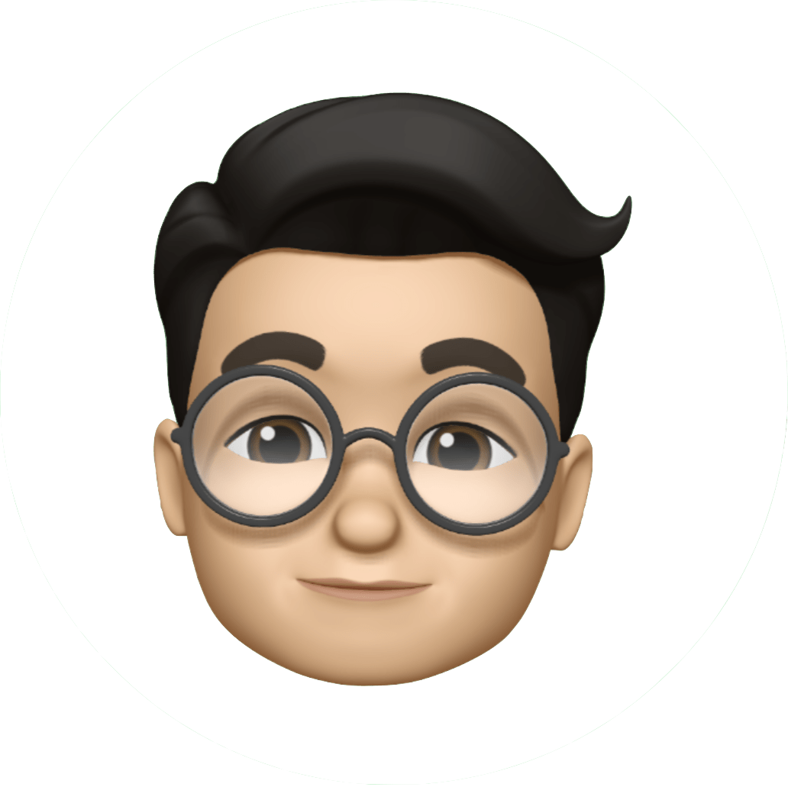

吳忠倫
ALLEN WU
F2E / PM / Blogger
一個中度蘋果粉，喜歡蘋果能使全部平台共用在一塊兒，更喜歡蘋果的設計風格與使用體驗。
並對新奇產品更是感到好奇與想嘗試，尤其特別愛在募資平台上買些什麼。（e.g. KICKSTARTER、 嘖嘖）
擅長技術
- HTML、CSS、Javascript、jQuery、PHP、SQL
- GA、GTM、GPI、GTMetrix、WebPagetest、Mixpanel、NewRelic、Google web.dev Measure
- Wordpress、Discuz!
- Google Ad Manage、Google Adsense
- Google Sheets、Asana、Trello、Bitbucket、GitHub、Plesk
- CRM、Slack、LINE Bot、Sublime Text、Notion、macOS
工作目標
- 研究、探討與分析使用者的使用行為
- 拉近與使用者的關係，並使商業模式與價值最大化
- 透過使用者研究或服務設計方法，參與用戶體驗研究
- 規劃偉大產品並參與其中
擅長做的事
- 喜歡用 Google Sheets 紀錄任何工作與生活表單
- 主導企劃產品製成
- 搜集數據與整理分析，並透過報表進而建議與優化產品規劃
- 推理與邏輯判斷力強，喜歡探索使用者行為及心理動機想法
- 科學家精神，喜歡做實驗研究與驗證
- 吹毛求疵，追求完美